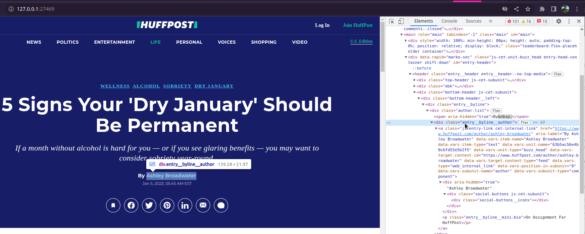

This vignette shows you how to write your own parser for a new site. Feel free to either use your parser locally or (preferably) contribute it back to the package via a pull request.
Before starting, check if the parser you need is already available
with pb_available(), or if someone has already committed to
working on it in an issue. If not,
open a new
issue to let others know you want to do it.
Starting a New Parser
The entry point is use_new_parser(), which guides you
through each step. Just pass a URL from the target site and your GitHub
author info:
library(paperboy)
use_new_parser(
x = "https://www.denverpost.com/2025/06/13/example/",
author = "[@yourname](https://github.com/yourname/)",
rss = "https://denverpost.com/feed" # optional; auto-detected if omitted
)use_new_parser() is designed to be run multiple
times:
- First run — creates the parser file from the template and opens it for editing, then exits.
-
Subsequent runs — sources the edited file, tests it
against live articles from the RSS feed, and updates
inst/status.csvon success.
If rss is omitted in use_new_parser, the
function below runs automatically and tries to identify an RSS feed.
This is used for testing the parser and is an important part of the
infrastructure. You can run it on its own if you need more control:
pb_find_rss("https://www.denverpost.com")If this does not retrieve and URLs, you might try a web search like “Denver Post RSS”.
Getting Test Data
The fastest way to get test articles is directly from the RSS feed:
test_data <- pb_collect("https://denverpost.com/feed")For broader coverage you can pull a larger set of URLs from the Media
Cloud API (requires MC_TOKEN to be set):
library(httr2)
test_data <- request("https://search.mediacloud.org/api/") %>%
req_url_path_append("search/story-list") %>%
req_headers(
Authorization = paste("Token", Sys.getenv("MC_TOKEN")),
Accept = "application/json"
) %>%
req_url_query(
q = "*",
start = format(Sys.Date() - 7, "%Y-%m-%d"),
ss = 107736L # source ID — look it up via the Media Cloud search UI
) %>%
req_perform() %>%
resp_body_json() %>%
purrr::pluck("stories") %>%
dplyr::bind_rows()Inspecting the HTML
Before writing selectors you need to see the raw HTML.
paperboy ships with pb_inspect(), which opens
any collected page in your browser:
pb_inspect(test_data, 1L)
Right-click the elements you care about and choose Inspect in your browser to see the CSS classes and attributes. To get better with CSS selectors I recommend the game CSS Diner.
Writing the Parser
The template created by use_new_parser() looks like
this:
pb_deliver_paper.www_denverpost_com <- function(x, verbose = NULL, pb, ...) {
pb_tick(x, verbose, pb)
html <- rvest::read_html(x$content_raw)
datetime <- html %>%
rvest::html_element("") %>%
rvest::html_attr("") %>%
lubridate::as_datetime()
headline <- html %>%
rvest::html_element("") %>%
rvest::html_attr("")
author <- html %>%
rvest::html_element("") %>%
rvest::html_text2() %>%
toString()
text <- html %>%
rvest::html_elements("") %>%
rvest::html_text2() %>%
paste(collapse = "\n")
s_n_list(datetime, author, headline, text)
}Fill in the empty strings with the CSS selectors and attributes you
identified. If you are familiar with rvest, this usually
takes only a few minutes. Feel free to look at the existing
parsers for inspiration. Some of them contains tricks that get
around strange HTML structures or apply shortcuts that get clean data
faster.
Choosing CSS Selectors
html_search() for robust fallbacks
The helper html_search() tries a list of selectors in
order and returns the first non-empty result. This is useful when a site
uses different templates for different article types. For example, the
headline could live in different places depending on article type:
headline <- html %>%
html_search(
selectors = c(
"[property=\"og:title\"]",
".headline__title",
".headline",
"title"
),
attributes = c("content", "text")
)Set all = FALSE (the default) to return only the first
non-empty match. For multi-value fields like article paragraphs, set
n = Inf to collect all nodes:
text <- html %>%
html_search(
selectors = c(".article-body>p", "p"),
attributes = "text",
all = FALSE,
n = Inf
) %>%
paste(collapse = "\n")Targeting the article body
Prefer a specific container selector over bare p to
avoid picking up ads, reader comments, and subscriber notices:
# Too broad — catches everything on the page
text <- html %>%
rvest::html_elements("p") %>%
rvest::html_text2() %>%
paste(collapse = "\n")
# Better — only paragraphs inside the article body class
text <- html %>%
rvest::html_elements(".article-body>p") %>%
rvest::html_text2() %>%
paste(collapse = "\n")There is always a trade-off: a specific selector gives cleaner text
but may miss articles that use a different template;
html_search() with a fallback chain gives you both.
s_n_list() for safe returns
All parsers return a named list via s_n_list(), which
ensures every element has length 1 and turns NULL values
into NA:
a <- 1:10 # longer objects are stored in a list column
b <- NULL # NULL becomes NA
c <- NA
paperboy:::s_n_list(a, b, c)
#> # A tibble: 1 × 3
#> a b c
#> <list> <lgl> <lgl>
#> 1 <int [10]> NA NAYou can include extra fields beyond the four required ones
(datetime, author, headline,
text); they are moved to the misc column
automatically.
Testing
After editing the parser, pass your collected test data to
use_new_parser() — it will source the file, run
pb_deliver() across all collected articles, and report
failure rates for each required field:
use_new_parser(
x = "https://www.denverpost.com/2025/06/13/example/",
author = "[@yourname](https://github.com/yourname/)",
rss = "https://denverpost.com/feed",
test_data = test_data
)A field must parse successfully for ≥ 95 % of articles to pass. If
the parser fails, use_new_parser() offers to load
test_data and the parsed results into your global
environment so you can inspect which articles failed and why.
Once the parser passes, use_new_parser() updates
inst/status.csv with a gold badge. Open a pull request and
you are done.
Automated Testing
Every parser in the package is tested daily against its RSS feed in a
separate
repository. Results are visible on the Dashboard.
The RSS URL used for daily testing comes from the rss
column in inst/status.csv, which
use_new_parser() populates automatically.
Contributing via LLM
LLM agents (such as Claude Code) can contribute parsers using the
same workflow described above. The main difference is that instead of
pb_inspect(), the agent reads the raw HTML directly or
calls pb_html_context() to get a compact text summary of
the page structure — meta tags, unique element/class combinations,
<time> elements, paragraph container paths, and
JSON-LD blocks — without needing a browser.
If you are using Claude Code inside the paperboy
repository, the /new-parser custom command automates the
full workflow:
/new-parser https://www.denverpost.com/2025/06/13/example/This runs each step — RSS discovery, data collection, HTML analysis,
parser writing, iterative testing, and status.csv update —
and creates a local commit ready for your review before you push.